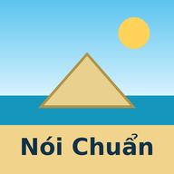

Trò chơi luyện phát âm cho học sinh Việt Nam
Chính sách quyền riêng tư
Áp dụng cho trang web xuyenvietnoichuan.netlify.app và ứng dụng Android "Nói Chuẩn" (vn.xuyenvietnoichuan.app). Có hiệu lực từ ngày 16/11/2026.
Xuyên Việt Nói Chuẩn là trò chơi giáo dục giúp học sinh luyện phát âm tiếng Việt chuẩn. Trò chơi được thiết kế cho học sinh, trong đó có trẻ em, nên chúng tôi chỉ thu thập ít dữ liệu nhất có thể và không dùng dữ liệu để quảng cáo.
1. Không cần tài khoản vẫn chơi được
Khi chơi không đăng nhập, toàn bộ tiến độ (chặng, sao, xu, huy hiệu) chỉ lưu trong bộ nhớ trình duyệt trên máy của người chơi. Chúng tôi chỉ nhận một số đếm ẩn danh gồm: mã máy ngẫu nhiên do trò chơi tự tạo (không gắn với tên, email hay thông tin cá nhân nào), miền đã chọn, tổng số lượt chơi, số chặng đã qua, ngày bắt đầu chơi và lần chơi gần nhất. Số đếm này chỉ dùng để thống kê số người đang luyện tập, chỉ quản trị viên xem được, và tự xóa khi người chơi tạo tài khoản.
Nhiều người chơi trên một máy (chế độ Gia đình, Góc người lớn): có thể tạo nhiều hồ sơ (VD: con, bố, mẹ) trên cùng một máy. Hồ sơ chính đồng bộ với tài khoản nếu đã đăng nhập; các hồ sơ thêm chỉ lưu trong bộ nhớ trình duyệt của máy đó, không gửi lên máy chủ. "Từ điển nhà mình" (cách gọi đồ vật ở quê do gia đình tự ghi) lưu cùng tiến độ của hồ sơ. Giấy chứng nhận được tạo ngay trên máy; chỉ được chia sẻ khi người chơi tự bấm chia sẻ. Người chơi từ 18 tuổi tự đồng ý, không cần bước xác nhận của cha mẹ.
2. Dữ liệu được lưu khi có tài khoản
| Dữ liệu | Mục đích |
|---|---|
| Tên đăng nhập hoặc biệt danh do người chơi tự đặt | Nhận diện tài khoản, hiển thị cho giáo viên của lớp (nếu có) |
| Bảng xếp hạng lớp: tên/biệt danh và số liệu tuần (số lượt đọc, số lượt đọc đúng, tỉ lệ đọc thử lần đầu) | Hiển thị bảng xếp hạng tiến bộ cho các bạn cùng lớp và giáo viên của lớp |
| Thi đua 3 miền: chỉ cộng dồn tổng số lượt đọc và lượt đọc đúng của mỗi miền theo tuần, không gắn với người chơi nào | Hiển thị bảng thi đua giữa các miền |
| Thông tin khi tạo tài khoản cá nhân: học sinh lớp mấy, trường nào; hoặc với người từ 18 tuổi: nghề nghiệp hiện tại hay trường đang học | Thống kê đối tượng người chơi để cải tiến nội dung luyện phát âm phù hợp từng lứa tuổi |
| Mật khẩu (tài khoản cá nhân) hoặc mã PIN 4 số (tài khoản lớp) | Đăng nhập. Mật khẩu tài khoản cá nhân được dùng để mã hóa mã khôi phục; không ai xem được, kể cả giáo viên |
| Mã lớp (nếu tham gia lớp) | Để giáo viên của lớp theo dõi kết quả luyện tập |
| Tiến độ chơi: chặng đã qua, sao, xu, huy hiệu, miền quê đã chọn | Lưu tiến độ, chơi tiếp trên máy khác |
| Kết quả đọc thử, các từ và âm hay đọc sai, tỉ lệ đọc đúng theo tuần, số lượt chơi lúc phòng ồn; các từ người chơi bấm "Máy nghe nhầm" kèm chữ máy nghe ra | Gợi ý lộ trình luyện tập; giúp giáo viên hướng dẫn |
| Email Google của giáo viên (chỉ tài khoản giáo viên) | Đăng nhập trang giáo viên |
| Xác nhận đồng ý: loại xác nhận (bố mẹ đồng ý, hoặc học sinh từ 16 tuổi tự đồng ý) và thời điểm; với lớp học: giáo viên xác nhận và thời điểm. Năm sinh bố mẹ nhập khi xác nhận chỉ dùng để kiểm tra trên máy, không được lưu | Chứng minh đã có sự đồng ý theo Luật Bảo vệ dữ liệu cá nhân |
3. Dữ liệu chúng tôi KHÔNG thu thập
Không thu thập họ tên thật, ngày sinh, số điện thoại, email của học sinh, địa chỉ, vị trí, danh bạ, hình ảnh. Không ghi âm và không lưu giọng nói.
4. Về giọng nói và micro
- Nhận dạng giọng nói: khi người chơi đọc, trình duyệt (Chrome, Edge, Safari) gửi âm thanh tới dịch vụ nhận dạng giọng nói của nhà cung cấp trình duyệt (Google hoặc Apple) để chuyển thành chữ. Trò chơi chỉ nhận lại phần chữ để chấm đúng sai và không lưu âm thanh. Việc xử lý âm thanh tuân theo chính sách của nhà cung cấp trình duyệt.
- Ghi âm giọng em: đoạn ghi âm 3 giây chỉ phát lại ngay trên máy, không gửi đi đâu và tự mất khi đóng trò chơi.
- Xin đồng ý trước khi dùng micro: lần đầu dùng micro, trò chơi hiện thông báo viết cho cha mẹ đọc, giải thích các điều trên, và chỉ bật micro khi cha mẹ (hoặc thầy cô khi nhà trường đã có ý kiến phụ huynh; hoặc học sinh từ 16 tuổi) đồng ý. Giọng nói gắn với một người cụ thể là dữ liệu cá nhân.
- Kiểm tra độ ồn: chỉ đo âm lượng xung quanh ngay trên máy trong 2 giây, không ghi âm, không gửi đi.
5. Nơi lưu trữ và bảo mật
Dữ liệu tài khoản được lưu trên dịch vụ Google Firebase (máy chủ đặt tại Singapore), truyền qua kết nối mã hóa HTTPS. Quy tắc bảo mật chỉ cho phép: học sinh đọc và sửa dữ liệu của chính mình; giáo viên chỉ xem được học sinh trong lớp do mình tạo.
6. Ai xem được dữ liệu
- Chính người chơi.
- Giáo viên của lớp mà học sinh tham gia (tiến độ, kết quả, từ hay sai; với tài khoản lớp, giáo viên xem được mã PIN để nhắc lại khi học sinh quên).
- Người quản trị trò chơi, chỉ khi cần hỗ trợ kĩ thuật hoặc xử lý yêu cầu xóa dữ liệu.
Chúng tôi không bán, không chia sẻ dữ liệu cho bên thứ ba để quảng cáo hay tiếp thị. Trò chơi không có quảng cáo.
7. Trẻ em và sự đồng ý của cha mẹ
Theo Luật Bảo vệ dữ liệu cá nhân năm 2025 (Luật số 91/2025/QH15, hiệu lực từ 01/01/2026), xử lý dữ liệu cá nhân của trẻ em dưới 16 tuổi cần có sự đồng ý của cha, mẹ hoặc người giám hộ. Trò chơi thực hiện như sau:
- Tài khoản cá nhân: khi tạo tài khoản, học sinh dưới 16 tuổi phải nhờ cha mẹ điền phần "Dành cho bố mẹ" (nhập năm sinh để kiểm tra và đánh dấu đồng ý). Tài khoản tạo trước ngày 16/11/2026 sẽ được nhắc bổ sung xác nhận này.
- Tài khoản lớp: giáo viên phải xác nhận nhà trường đã có sự đồng ý của cha mẹ học sinh trong lớp. Lớp chưa xác nhận thì học sinh không tạo được tài khoản mới.
- Micro: lần đầu dùng micro, trò chơi hiện thông báo cho cha mẹ đọc và xin đồng ý (xem mục 4).
Cha mẹ có thể rút lại sự đồng ý, yêu cầu xem hoặc xóa dữ liệu của con bất cứ lúc nào (xem mục 8 và 9).
8. Xóa tài khoản và dữ liệu
- Mở trò chơi, đăng nhập tài khoản cần xóa.
- Ở mục "Tài khoản & lưu tiến độ" trên bản đồ, bấm "Xóa tài khoản" và xác nhận.
- Toàn bộ dữ liệu của tài khoản trên máy chủ (hồ sơ, tiến độ, kết quả trong lớp) bị xóa ngay và không thể khôi phục.
Nếu không đăng nhập được (quên mật khẩu, mất mã khôi phục), cha mẹ hoặc học sinh gửi email tới địa chỉ ở mục 9, ghi rõ tên đăng nhập (và mã lớp nếu có). Chúng tôi xóa dữ liệu trong vòng 30 ngày.
Bản đồ trong trò chơi dùng dữ liệu ranh giới công khai Natural Earth (đã gộp theo 34 tỉnh, thành sau sắp xếp năm 2025 và đơn giản hóa để hiển thị), kèm quần đảo Hoàng Sa và Trường Sa của Việt Nam.
9. Liên hệ
Mọi câu hỏi, yêu cầu xem hoặc xóa dữ liệu: huywynt@gmail.com
10. Thay đổi chính sách
Khi chính sách thay đổi, chúng tôi cập nhật trang này và ghi ngày hiệu lực mới ở đầu trang.
© 2026 Nguyễn Hùng Vỹ Huy. Bảo lưu mọi quyền. · ← Về trò chơi